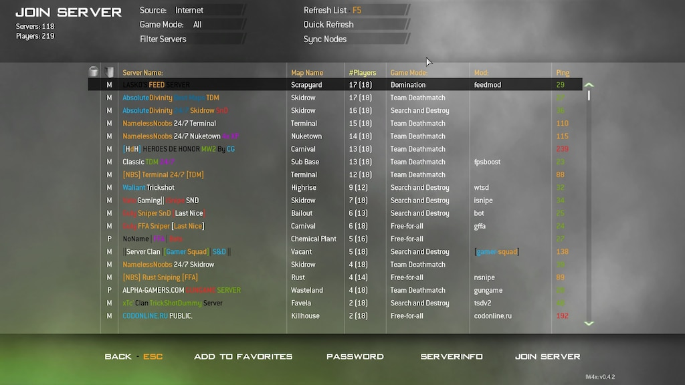
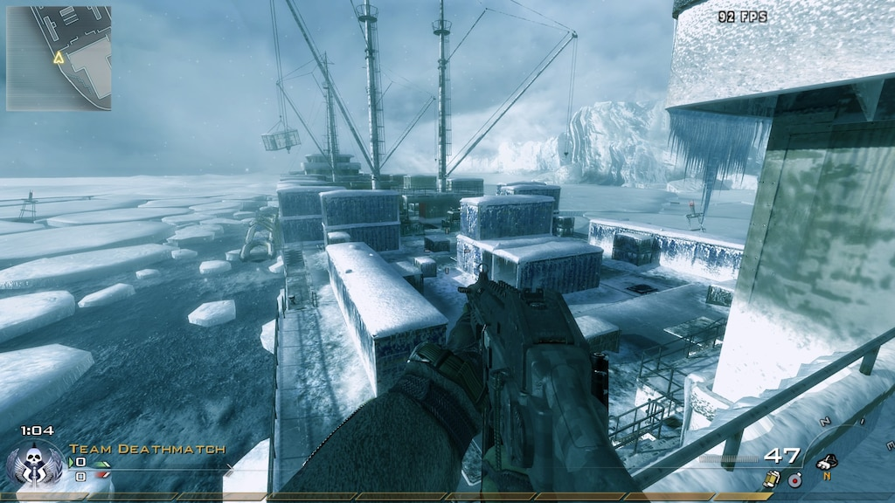
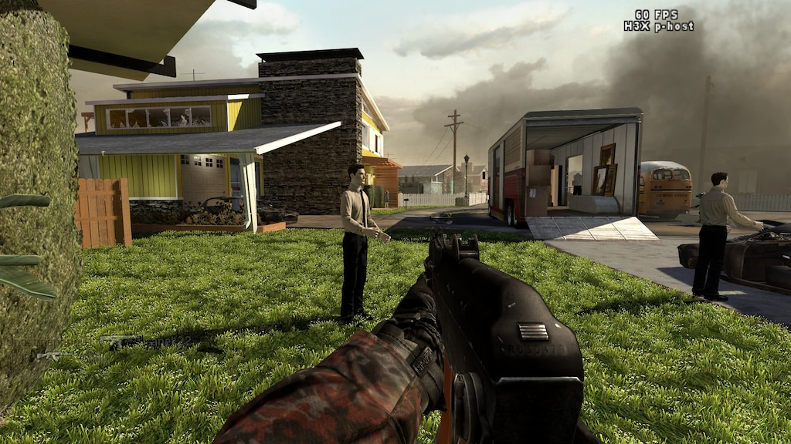
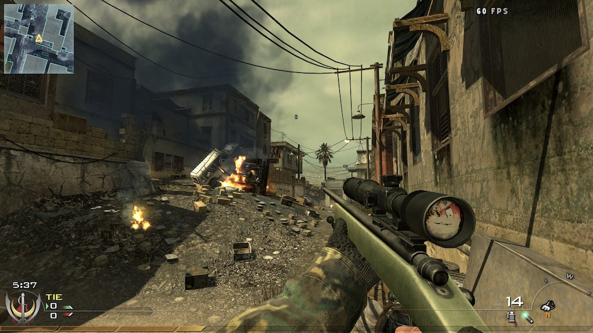
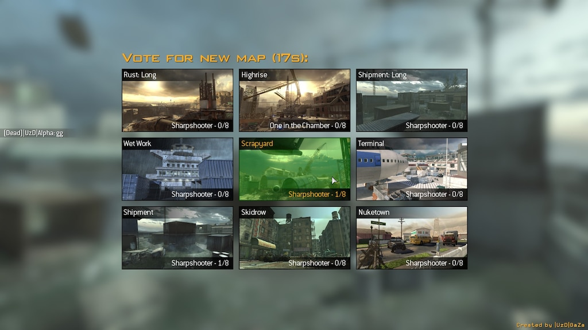
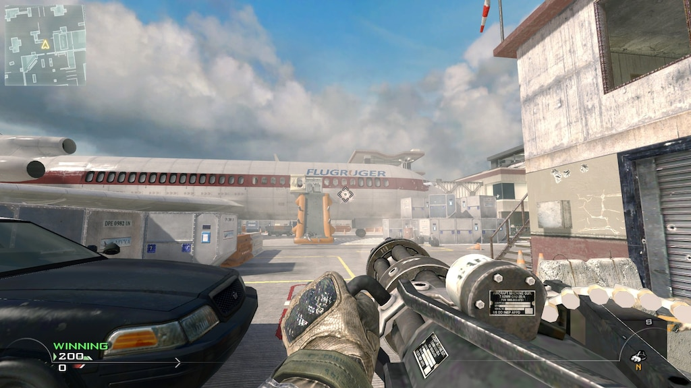
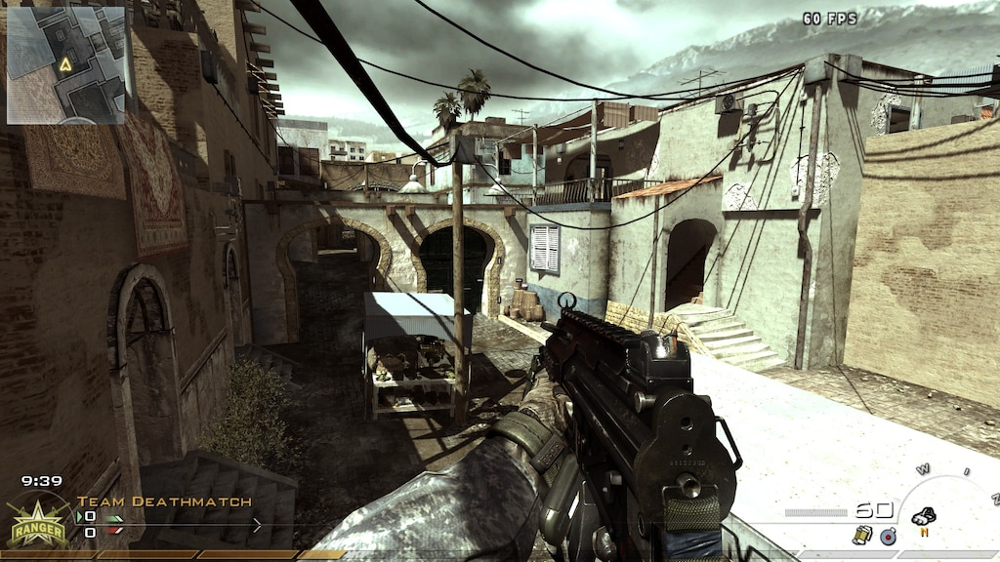
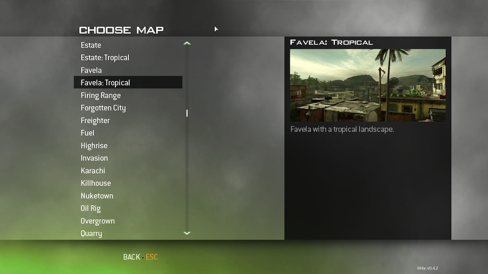

Rekt T5
Black Ops 1 Client, an official fourDeltaOne T5M continuation project which supports Multiplayer and Zombies. Including newly added support for LinkerMod.
IW4x is an open source project that allows you to set up your own dedicated servers with modifications for Modern Warfare 2 on top of a decentralized network. Modifications are not restricted to just scripting the client in the way you like but also introducing old new gameplay mechanics like leaning, new guns, new maps and new gametypes that haven't been accessible to the world of Modern Warfare 2… until now! IW4x is a modification of the game Call of Duty: Modern Warfare 2, developed by Infinity Ward. The goal of this modification is to finish the - in our eyes - unfinished development of the PC version of Call of Duty: Modern Warfare 2, like other projects (e.g. alterIWNet and fourDeltaOne) did in the past.
Join the 30,000+ members Discord server below to stay up to date with the latest news updates & releases for the client! As well as support & advice for those who require it. Click here to join the discord
Many ask the question "Will IW4x get me VAC banned?" the short answer is [b]no[/b]. There is much missinformation espcially spread from the MW2 steam fourms (Ignore such). IW4x is completely external to Steam and Steam Servers (you don't play with steam users), it's impossible to get banned. IW4x players only play with fellow IW4x players as the servers are completely seperate from Steam. So be assured that you are at no risk of recieving a VAC ban due to the fact that it's very much seperate from Steam MW2 and VAC itself as it doesn't even run. "Does this mean iw4x is full of cheaters?" Absolutely Not! In-fact iw4x has far less cheaters than Steam Servers due to it's more advanced anti-cheat system, preventing .dll and process hooking exploits that plague steam servers such as aimbot and wallhack. Futhermore server owners have full moderation controll unlike steam as explained below so even if abusers do slip through the net they can be quickly banned.
Nope, when you start iw4x you will be starting fresh as stated above iw4x is external from Steam. So you will have a separate rank, classes, title etc. When and if you go back to steam mw2 you will still have the same rank you had before in steam, iw4x does not alter this at all. However you can always manually set your rank back to the level you were if you wish as this is allowed, or just use the unlock all button in the barracks menu to get 10th prestige level 70 everything unlocked.
No you do not play with steam servers. Iw4x is very much separate from steam meaning you won't mix with steam players and will only play with other iw4x users. Yes your friends can play with you but obviously they also have to install iw4x to play.
The main immediate difference that separates vanilla MW2 from IW4x is dedicated servers & the server browser (If you ever played Call of Duty 4: Modern Warfare it's exactly like that). The old flakey matchmaking system is gone, it has been replaced by a more suitable and optimal solution for PC gamers, putting control back into the players hands.
Almost all servers are hosted on dedicated VPS servers, this means you're likely to get very low pings and no host player (Far superior to the vanillas p2p system) this also means no host advantage or host migration!
IW4x enables server owners/assigned moderators full control over their servers, this gives them the power to kick/ban people as well as customise the server itself to their own liking with mods and configuration options.
Another difference is the range of new options such as the FOV slider in the menu allowing users to change their FOV on the fly (Removing the need for clunky third party applications that vanilla MW2 required), Borderless window mode is another minor but very handy feature, Also a new direct 3D setting has been added to help reduce ram usage and in doing so improves performance. The FPS limit has also been disabled allowing users to set whatever fps cap they desire. Also the console is enabled by default unlike the vanilla game so any commands can be entered there allowing you easily fine tune settings and give to further control over your gaming experience.
IW4x also has mod support so almost anything you can think of can be coded in, like gamemodes such as (gun game, one in the chamber), new maps the list is endless for mods and what you can do with them. Here is a quick showcase on what is possible in iw4x..
Much more DLC has been added, 8 packs in total made up of cod 4 maps and newer call of duty maps such as the fan favourite Nuketown and others such as Firing Range and many more. Variant of Wetwork from cod 4 (New DLC):
Nuketown (New DLC):
Some new guns have been added to create a class system, they will not be adding any more guns officially but via mods any guns can be added. But the base game has the cod 4 AK47, AK47u, Peacekeeper, Gold Desert Eagle, Dragunov and the M40A3.
Custom maps support has also been made available allowing you to port over any cod 4 map or cod 4 custom map or even make your own map in radiant and port it over yourself. Ported cod 4 deathrun map (Custom Map/Mod):
Map Vote (Mod):  Custom weapon (Mod):  MW3 Seatown (Custom map):  Part of the map list: 
If you like what IW4x has achieved, here are some similar projects you may be interested in.
Black Ops 1 Client, an official fourDeltaOne T5M continuation project which supports Multiplayer and Zombies. Including newly added support for LinkerMod.

Project Info Here (Don't report in testing, will be added before release)

Black Ops 2 Client, featuring dedicated server support for both Zombies and Multiplayer, chromium based server list, 8 player Zombies and new Zombies gamemodes.